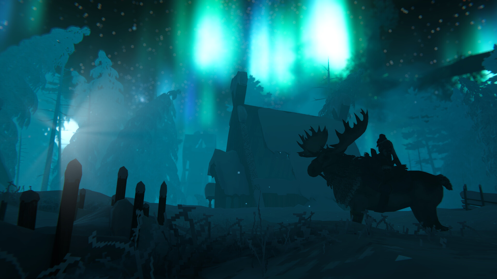
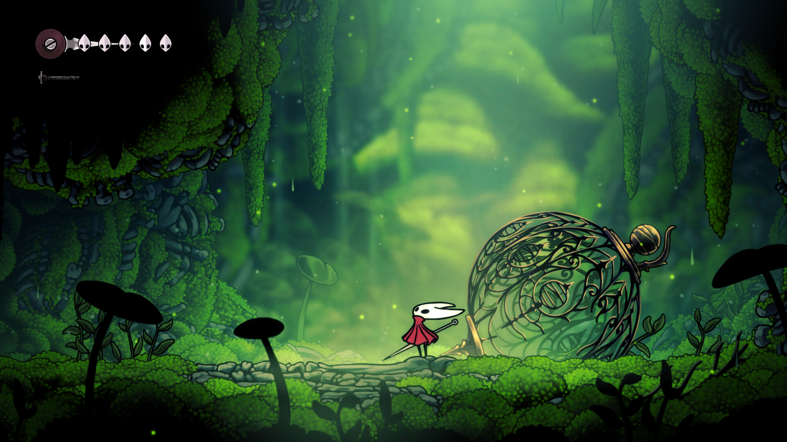
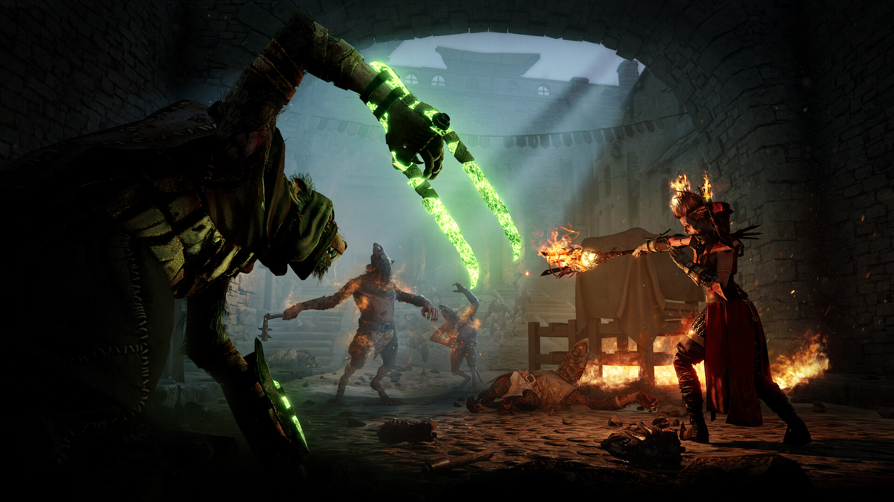

Why Varun Loves Valheim:
Dropped into purgatory with nothing but a tunic and Viking determination, Valheim is an absolute masterpiece of atmosphere, procedural wilderness, and survival architecture. The dynamic weather system—from ferocious Black Forest thunderstorms to the eerie bioluminescent haze of the Mistlands—creates an unforgettable sense of place.
As a student engineer, I am fascinated by Valheim's structural integrity building mechanics: timber supports, iron beams, and smoke ventilation physics require real architectural logic. Conquering the biomes with my Viking clan and sailing longships across uncharted oceans embodies the thrill of shared resilience.
🏆 Conquered Boss Trophies:


Why Varun Revering Hollow Knight:
Hollow Knight is, without question, one of the greatest games ever conceived. Its melancholic subterranean atmosphere, Christopher Larkin's breathtaking orchestral score, and surgical combat precision create an experience of pure gaming elevation.
Every boss fight—from the dance of the Mantis Lords to the tragic duel against the Pure Vessel and the radiance of the pantheons—teaches precision timing, pattern recognition, and calm focus under intense pressure. It mirrors software debugging: when hitboxes are tight, mistakes are yours to own and master.
🔮 Varun's Signature Charm Build:
"No mind to think. No will to break. No voice to cry suffering. Born of God and Void."
Why Varun is Hyped for Silksong:
Stepping into the boots of Hornet, the Princess-Protector of Hallownest, Hollow Knight: Silksong redefines Metroidvania movement with acrobatic verticality, sprint mantling, high-speed needle lunges, and an on-the-fly tool crafting system.
The shift from Hallownest's descent into ruin to Pharloom's ascent toward the shining citadel brings a radiant color palette of crimson silks, burning coral moss, and resonant bronze chimes. Team Cherry's craft represents the zenith of independent game development: uncompromising vision, artisanal hand-drawn animation, and flawless kinematic response.
🧵 Hornet's Weaver Arsenal:
"Shaw! Hegale! Ascend the silk-bound tower and sing the song of Pharloom."


Why Varun Loves Vermintide 2:
Set in the apocalyptic Warhammer Fantasy End Times, Warhammer: Vermintide 2 is the undisputed champion of first-person melee combat. The visceral feedback of parrying an overhead stormvermin halberd, dodging a packmaster's hook, and cleaving through a sea of hundreds of ratmen is unmatched in tension and satisfaction.
The game demands razor-sharp teamwork, situational awareness, and split-second tactical prioritization. As someone who studies multithreaded systems, I am endlessly awed by Fatshark's crowd AI engine coordinating hundreds of distinct entities without dropping a frame on high-difficulty Cataclysm runs.
🛡️ Varun's Top Played Careers:
"Holy Sigmar, bless this ravaged body! The pact-sworn shall drown in their own warpstone filth!"